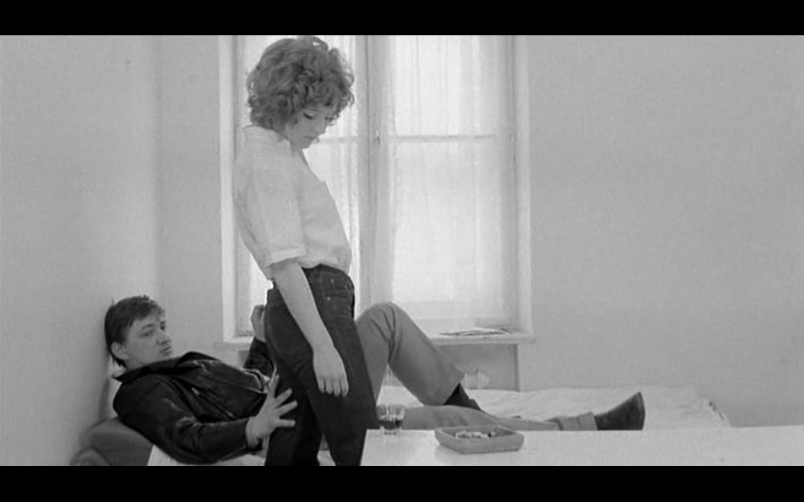
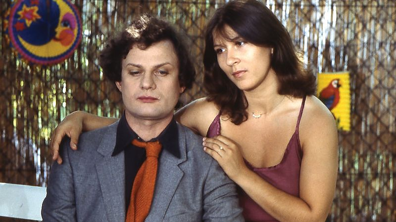
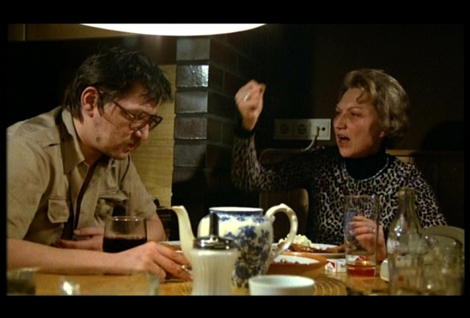
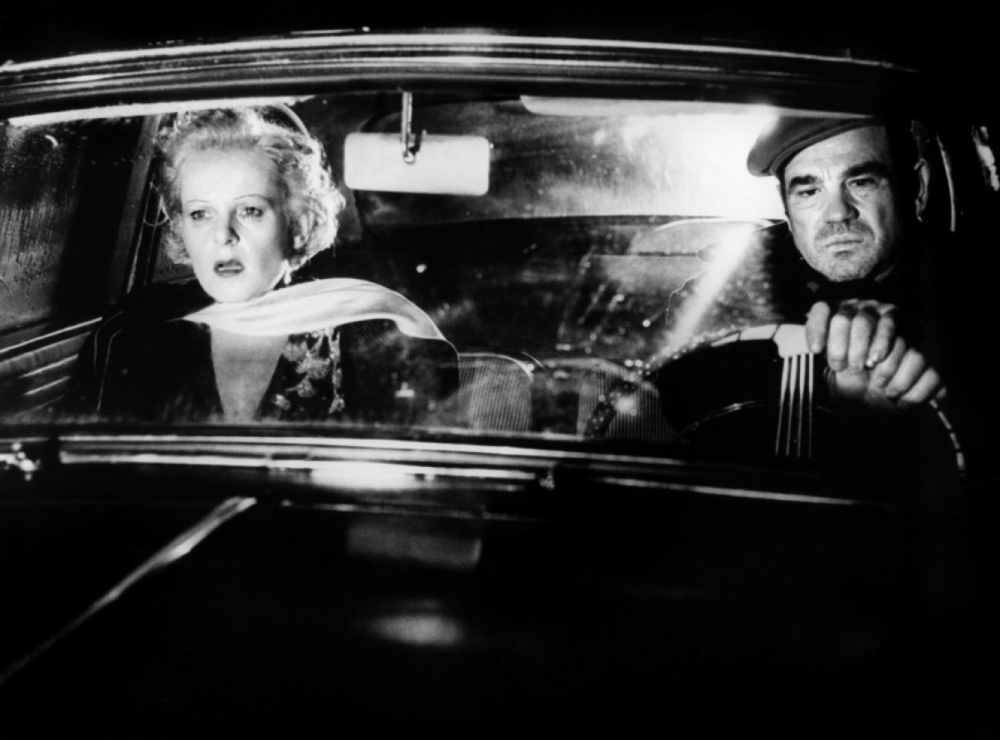
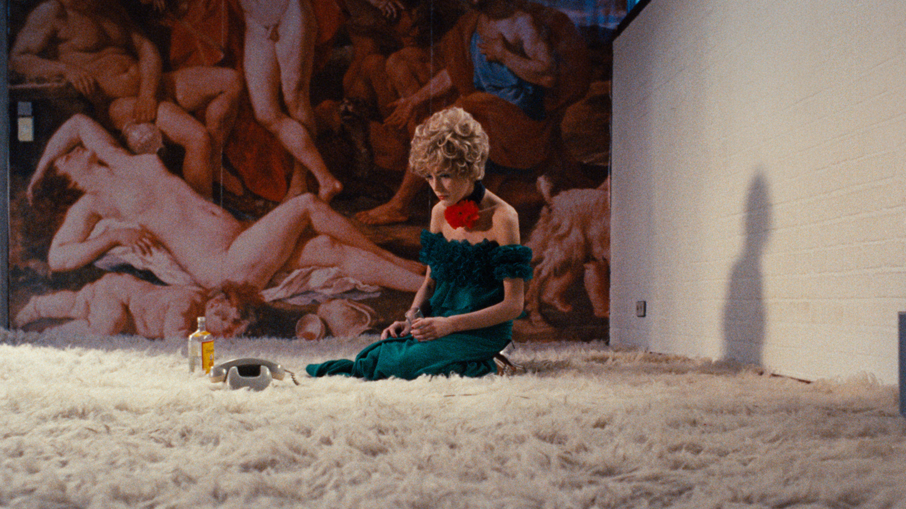

Total Fassbinder
Narcisista, sadico, sperduto: l'esistenza come cinema di se stesso
Originalmente uscito su Yanez Magazine.
Era il 1945. Il Terzo Reich volgeva al termine. Klemperer, un filologo che tenne un diario in cui annotava i cambiamenti della lingua tedesca durante la dittatura, ratificò che il nazismo aveva infettato il modo di pensare tedesco. Aveva contagiato tutti, anche le vittime, tutti partecipavano della sua logica. Aveva corrotto anche le generazioni a venire.
Forse lo sapeva Liselotte Pempeit, in qualche modo lo temeva; probabilmente per questo aveva suggerito a Rainer Fassbinder, il suo primogenito, nato nel 1945, di dichiarare di essere nato solo nel 1946, a guerra finita, distante dal fanatismo hitleriano. Helmut, invece, il padre di Rainer, accusava proprio la guerra di essere la causa degli eccessi e delle stranezze del figlio. Erano stati i bombardamenti percepiti nel ventre materno a renderlo instabile. Del nazismo Rainer non si liberò mai, lo analizzò in tutte le forme, scomponendolo e ricomponendolo, analizzandone i prodromi e i postumi come si fa con le brutte malattie e sentenziando poi che la Germania non era guarita e che tutta la visione hitleriana era ancora lì pronta ad esplodere. D’altra parte, per assurdo, intorno al 1977, quando la delusione e la tristezza lo avevano avvinto anche a causa delle accuse di antisemitismo che gli furono rivolte, c’è chi sostenne di averlo visto scorrazzare per Parigi in auto gridando dal finestrino “Heil Hitler” e dichiararsi l’incarnazione stessa del Führer.
L’ amore è più freddo della morte, 1969
“L’amore è più freddo della morte” è il primo lungometraggio con cui si misura Fassbinder. La prima scena si apre su uno spazio bianco, asettico, con un arredamento minimale. La staticità, l’assenza di ombre, il modo di atteggiare il corpo degli attori, il silenzio irreale ci riportano al teatro. Sulla scena si muovono diversi uomini, fumano, scazzottano, leggono il giornale. Sono dei piccoli delinquenti che sono stati rapiti dalla mala locale con l’intento di arruolarli nelle proprie fila. Franz, interpretato dallo stesso Fassbinder, rifiuta più volte. Quando nella sala d’aspetto comprare Bruno, Franz è immediatamente attratto dalla sua perfetta glacialità. La sua entrata in scena è preceduta da un lunghissimo minuto di primo piano sulla sua figura elegante, impeccabile. Quando Franz viene rilasciato, Bruno gli viene messo alle calcagna dalla mala. Il preambolo della storia è lunghissimo e mostra chiaramente come l’occhio del regista sia concentrato sull’istintività dei rapporti di dominio che regolano le relazioni umane e su come l’attrazione sia un importante strumento di potere. Bruno inizia a trascorrere le sue giornate con Franz e con la sua fidanzata, Joanna, che si prostituisce per mantenerlo. Franz domina completamente la ragazza e a sua volta è dominato dal fascino di Bruno, con cui accetta di dividere anche la stessa Joanna, e dal quale si lascia coinvolgere in piani sanguinari. Il rovesciamento degli equilibri di potere avviene allorché Franz e Bruno pianificano una rapina. La ragazza avvisa la polizia. Nello scontro con le forze dell’ordine Bruno ha la peggio, mentre Franz e Joanna riescono a scappare. Durante la fuga in auto la ragazza rivendica il suo ruolo e confessa di essere lei la delatrice. Il potere è di chi se lo prende. “Puttana” le dice Franz. Il potere appare sì liquido e imprevedibile, ma appannaggio solo di chi è libero da emozioni. Joanna può rovesciare il rapporto di forza con Bruno, ma non può fare ugualmente con Franz, come se l’attrazione portasse con sé un desiderio di sottomissione.
 L’amore è più freddo della morte, 1969
Rainer Fassbinder possedeva una collezione di bambole. Lo sosteneva Hanna Schygulla, una ragazza che frequentò con lui un corso di recitazione e poi divenne protagonista di molti suoi lungometraggi. Hanna lo affiancò sin dai suoi esordi teatrali nell’Action Theatre. Una compagnia teatrale fondata da Ursula Strätz e suo marito, Horst Söhnlein, sulla falsariga del living Theater, che era riuscita presto a essere un punto di riferimento importante della cultura underground monacense e che tra il 1967 e il 1968 trovò con Fassbinder sia il suo punto massimo di celebrità, sia la sua fine.
Rainer agì da predatore; si introdusse nel teatro grazie alla stima di Ursula e per suo tramite riuscì a rimanerci nonostante le antipatie che presto nacquero fra lui, il fondatore e altri membri del gruppo. In poco tempo riuscì a estromettere tutti coloro che temeva perché immuni al suo carisma e a sostituirli con persone su cui sapeva di esercitare un ascendente molto simile a un potere incondizionato. Nelle fasi di stravolgimento dell’Action Theatre, Ursula Strätz lo difese con forza dalle accuse degli altri membri, come anche dalla rabbia del marito, da cui a causa sua si separò. Lei stessa fu poi allontanata dalla direzione del teatro da un Rainer che, ormai liberatosi da ogni possibile detrattore interno, non intendeva lasciare la guida a nessun altro che a se stesso. Ursula non lo accusò mai di aver cospirato contro di lei; a suo dire quel posto gli spettava. Era il più forte. E al più forte il potere spetta per diritto naturale. Dal più forte è piacevole essere sottomessi e guidati.
Come sosteneva Klemperer la mentalità del nazismo non era morta con il terzo Reich.
Fassbinder, nel teatro come nel cinema come nella televisione, non metteva a disposizione degli attori i copioni e si infastidiva oltre modo se un attore gli faceva troppe domande sul personaggio che doveva interpretare. Era tutto nella sua testa; questo come bastava a lui, doveva bastare agli altri. Per ottenere dagli attori quello che voleva gli era sufficiente creare la giusta atmosfera, sosteneva. Atmosfera facilitata dal fatto di dirigere quello che più di un gruppo di artisti rimase per lungo tempo una sorta di setta, in cui entravano a fare parte tutte le persone che avevano con lui una relazione affettiva. Di fatto fino al 1971 il regista e gran parte della sua compagnia vissero insieme. Guardando soprattutto i primi lavori di Fassbinder, infatti, si ha l’impressione di trovarsi sempre davanti alla stessa pellicola, impressione alimentata oltre che dal timbro inconfondibile, proprio dalla presenza degli stessi attori oltre che dall’uso ricorrente degli stessi nomi. Caratteristica che suggerisce l’idea di trovarsi davanti a qualcosa che è più di un film, qualcosa che per essere capita davvero ha bisogno di essere analizzata in un contesto costituito e dalla mole immensa e variegata del lavoro dell’artista, e dai rapporti interpersonali che ricorrono fra quegli attori e il regista. Basta pensare a due attrici che ritroviamo spesso nei film di Fassbinder, Lilo Pempeit e Irm Hermann. Entrambe spesso in ruoli marginali e sbrigativi. In ruoli che mettevano in risalto la crudeltà della prima e la debolezza della seconda. Lilo Pempeit era lo pseudonimo della madre di Fassbinder, una madre da cui si era sentito profondamente ferito e abbandonato e a cui non era disposto a riconoscere alcuna autorevolezza. Irm, invece, era una giovane donna che dipendeva affettivamente da Rainer. Per un periodo lo ospitò nella sua casa minuscola addirittura con l’amante di lui, accettando di dormire sul pavimento. I ruoli che Rainer serbava per Irm erano mortificanti, ad esempio il ruolo della dell’assistente masochista in “Le lacrime amare di Petra Von Kant”o di una giovane prostituta respinta a causa del suo aspetto e del suo comportamento in “Il soldato americano”. Secondo Ursula Strätz Fassbinder metteva alla prova le persone che gli stavano intorno, vedendo quanto fossero in grado di non sottomettersi davanti al più forte. E a ben guardare sembrerebbe che per chi si lasciava avvincere il disprezzo era totale. Fassbinder aveva dunque una collezione di bambole. Non è dato sapere che tipologia di bambole fossero, quante fossero e come fossero vestite. Le bambole però hanno due caratteristiche sono molto simili agli esseri umani e sono inanimate, in quanto inanimate esaudiscono tutte le volontà di colui che ci gioca.
Un anno con tredici lune, 1978
Elvin non riesce più a mantenere la stazione eretta, si accascia appena può, si siede piangendo dietro le porte, si sdraia sul pavimento, si abbandona come un peso morto sul letto, si corica sul cofano dell’auto dell’uomo che lo sta lasciando. Elvin o Elvira. La sua colpa originaria è stata tradire se stesso, smettere di essere chi era nella speranza di ottenere l’amore della persona di cui si era infatuato. Un anno con tredici lune è la storia di una mattanza, di cui protagonista è un macellaio. La sua infanzia è stata devastata dall’egoismo e dall’ipocrisia borghese, la sua età adulta dall’amore per un uomo potente e senza scrupoli, Anton Saitz. Incuriosito dalla sua dedizione, Anton gli suggerisce che forse se cambiasse sesso potrebbe ricambiare le sue attenzioni. Elvin non curante di se stesso si opera. Il suo sogno d’amore non viene coronato; Anton si gira dall’altra parte e abbandona Elvin diventato Elvira in un vuoto di identità. Non è più un macellaio, non ha più i suoi vecchi affetti, non ha più il suo corpo. Per diverse ragioni, Elvira si ritrova a ricercare Anton. Il loro incontro è il punto più drammatico del film. Davanti all’uomo vestito da tennista e che costringe i suoi scagnozzi a farse ridicole, Elvira, che stenta a riconoscerlo, è messa davanti alla sua pochezza. Anton è solo un pagliaccio senza valore. Questa consapevolezza rende la sua situazione ancora più intollerabile. L’incontro con Anton rappresenta ,però, un’altra volta una catastrofe esistenziale. Elvira fa un ultimo tentativo di tornare a se stesso indossando abiti maschili e tagliando i proprio capelli, ma tutto è ormai perduto. Non le resta che suicidarsi in una scena grottesca, in cui Elvira giace esanime sul letto mentre Anton seduce la sua migliore amica sul pavimento della stessa stanza. La riflessione è sulla mancanza di un rapporto direttamente proporzionale fra il potere e il valore, Anton non vale nulla a dispetto del dominio che esercita; e sulla forza deflagratrice dell’amore sui proletari.
 Un anno con tredici lune, 1978
La vita, il teatro, il cinema, la televisione non costituirono per Fassbinder domini diversi. Erano tutti sullo stesso continuum in cui il fine ultimo era raccontare una storia. Una storia che svelasse la crudezza dei rapporti di forza all’interno della società borghese. E questa storia Rainer voleva che raggiungesse un pubblico vasto, per questo si guardò bene dall’assumere atteggiamenti schizzinosi verso taluni mezzi di comunicazione. I suoi colleghi registi sostenevano, invece, che fosse il fascino innegabile che provava per la celebrità a portarlo in tutte le trasmissioni popolari di intrattenimento, in questo modo si guadagnò il titolo di pagliaccio di corte dell’industria culturale.
Rainer il burattinaio pagliaccio di corte, viveva, quindi, rapporti di forza in cui spesso era uno spietato carnefice, ma ne denunciava a gran voce la pericolosità. Sicuramente non tollerava di rivestire il ruolo della vittima come non sopportava di subire l’autorità altrui. Il rapporto di forza basato sul ruolo gerarchico per lui era straziante, ma metteva in atto continuamente quello basato sulla coercizione morale e sul carisma, in cui riusciva facilmente ad avere il ruolo del più forte. Lisotte racconta che durante la scuola primaria dovette ritirare in fretta e furia il figlio dalla scuola pubblica e iscriverlo in una scuola steineriana dopo che il preside la contattò disperato. Una maestra gli aveva dato uno schiaffo e il bambino in preda a una crisi isterica aveva iniziato a invocare l’intervento della polizia. Per il giovanissimo Rainer era chiaro che l’uso della violenza non potesse far parte di un metodo educativo ed era lapalissiano che qualunque uso di metodi coercitivi fosse un illecito e quindi necessitasse l’intervento delle forze dell’ordine.
Due grandi filoni tematici dei film di Fassbinder, infatti, sono proprio i rapporti di forza fra esseri umani e l’assenza di una mentalità democratica nella Germania del dopoguerra. Interessante come nel quadro teorico del regista la mentalità autoritaria tedesca venga collegata direttamente ai valori della borghesia, di cui lo sviluppo naturale è proprio il nazismo; indicando in questo modo nel nazismo null’altro che borghesia degenerata. I valori della borghesia, che ritroviamo disseminati nella sua amplissima produzione, e contro cui si scagliano per esempio i giovani rivoluzionari in “La terza generazione” sono: la proprietà privata, l’individualismo, il giustizialismo, la guerra come male necessario che dà senso alla vita, l’ordine, la gerarchia, il rispetto per l’autorità, l’affidabilità, il lavoro, il senso di appartenenza, le donne come proprietà e il diritto del più forte. Valori contro cui Rainer si scagliò anche durante le numerose interviste che rilasciò durante la sua vita. Tematiche trattate inoltre in “Germania in Autunno” (vedi scheda), lungometraggio collettivo sulla situazione politica tedesca alla fine del 77. Il contributo di Fassbinder mette a nudo tutte le contraddizioni del regista e rende lecito chiedersi quanto autoritario possa diventare l’antiautoritarismo.
Germania in Autunno, 1978
Germania in Autunno è un film collettivo incentrato sulla situazione politica tedesca alla fine del 77, segnata dai rapporti ambigui e dalle tensioni fra i gruppi terroristici di sinistra (RAF) e lo stato. Il contributo di Fassbinder apre il lungometraggio e dura circa trenta minuti. Il regista si mette completamente a nudo, mostrando il suo coinvolgimento emotivo e la sua incredulità davanti ad avvenimenti politici avvertiti come assurdi e intollerabili. I fatti da cui ha origine la riflessione sono il dirottamento di un aereo di linea da parte di un gruppo terroristico e l’improbabile suicidio in carcere di tre esponenti delle RAF. Alcune scene riprendono la sua quotidianità, altre un dialogo con la madre. Nelle sequenze che lo ritraggono nella sua vita privata, il regista appare isterico e malfermo, sull’orlo di un crollo nervoso. Si confronta con gli amici al telefono, scambia opinioni con il compagno, Armin Maier, piange e si dispera. Avvilito dalla propria impotenza e dalla consapevolezza della forte ricaduta che avranno quegli eventi sulla vita dei cittadini. Nelle conversazioni con la madre, Liselotte Pempeit, il regista mostra un atteggiamento più razionale. Dalle risposte di Liselotte emerge una mentalità profondamente antidemocratica e giustizialista, non lontana da quella dello stesso Armin. Lo scambio di vedute con il compagno, però, non è indolore. Rainer risponde all’esternazione dei pensieri reazionari di Armin scalpitando, piangendo, picchiandolo e addirittura cacciandolo di casa. Mostrando di fatto una doppia morale. Egli stesso ha problemi profondissimi ad accettare un pensiero diverso dal proprio, egli anche è di fatto anti democratico. Il lavoro si apre con una considerazione del regista sulla pericolosità del matrimonio, caposaldo della società borghese e si chiude con una riflessione di Liselotte sulle forme di governo. Con candida trasparenza, caldeggia un governo di tipo monarchico, in cui il re possa essere una guida illuminata che comandi, protegga e faccia del bene.
 Germania in autunno, 1984
A ben guardare, nella sua analisi dei rapporti di forza, il regista mette coraggiosamente l’accento anche sulla necessità di fuga dal libero arbitrio, sul desiderio di rinunciare al potere, sulla volontà di demandare le proprie decisioni ad altri, e sul piacere dato da quello stato di vulnerabilità. Jurgen Trimbon riporta che parlando della attrice Irm Hermann dichiarò: “E’ una di quelle persone che si potrebbero definire nate per essere vittime: trova la propria identità o prova piacere solo nella sofferenza, nel farsi schiacciare”. Secondo Fassbinder era necessario essere consapevoli di quanto nei rapporti di forza siano attive le vittime quanto i carnefici, alla mentalità patriarcale partecipino le donne oltre gli uomini, e di quanto anche gli oppressi abbiano molte caratteristiche e dinamiche disgustose. Questo modo di descrivere gli emarginati e le minoranze a tutto tondo gli riservò molte antipatie e non poche sofferenze. Se nella vita privata il suo sguardo sulle dinamiche di potere appare giudicante e spietato, nei suoi lavori artistici la prospettiva si ribalta. Basta pensare alla tenerezza con cui guarda alla dipendenza di Veronika in “Veronika Voss” (vedi scheda) e al martirio di Elvira in “Un anno con tredici lune” (vedi scheda).
L’orizzontalità dei rapporti sembra essere a detta di Fassbinder, lo ripetè diverse volte nelle sue interviste e nelle sue dichiarazioni, un punto cui aspirare, una meta. Sostenne di aver compreso l’importanza di lavorare con professionisti quando capì che era l’unico modo di evitare di assumersi il ruolo di padre o madre; confidò che la sua vera ambizione nel girare “Attenzione alla puttana santa”, fosse la realizzazione di un film in modo antiautoritatio , ma che in fine era avvenuto tutto il contrario. L’essere autoritari per il regista coincideva con il fascismo; fascismo inteso non come il movimento politico italiano, ma come modo di vivere, come atteggiamento. Quell’atteggiamento che fa sì che l’immigrato greco, protagonista del film “Katzelmacher”, sarà sia sfruttato dai tedeschi in quanto l’affitto che paga è una cifra esorbitante impensabile per gli autoctoni, sia poi malmenato in quanto avvertito come minaccia. L’atteggiamento fascista è squadrismo ed esclusione. E soprattutto difesa dei propri confini e della proprietà. Un membro avvertito estraneo al gruppo e inferiore è altamente in pericolo.
Irm Hermann racconta della sua convivenza con Fassbinder come il periodo più intenso della sua vita. Nel documentario di Rosa Von Praunheim appare come una donna dolce, rassicurante, mite. Racconta l’esistenza di Rainer come qualcosa di straordinario, ma ne narra anche il dolore. Il dolore quotidiano che tormentava il regista. E’ a causa di quel dolore che lei non gli ha mai serbato risentimento per le ingiustizie che le ha fatto subire, né gli ha mai augurato di essere finito all’inferno. Per il male che ha fatto Rainer ha già pagato in vita. Nessuno deve pagare due volte. I racconti su Fassbinder ne delineano una personalità quasi sadica, ingrata, pronta a seminare zizzania e a portare sull’orlo del fallimento economico le persone che lo aiutano e lo amano. La stessa Irm aprì un credito presso una banca per consentirgli di girare il primo cortometraggio e in seguito, non essendo in grado di ripagarlo, finì in grosse difficoltà. La carcerazione preventiva la evitò grazie a una dichiarazione giurata. Anche Christopher Roser, attore in disgrazia e per qualche tempo compagno dell’artista, mise parte dei propri risparmi a disposizione del regista per girare “Il piccolo caos”. Non solo la cifra accordatagli lievitò incredibilmente a causa del prolungamento dei tempi di riprese, ma il regista si rifiutò di restituirgliela anche quando divenne abbastanza ricco da poterselo permettere. Irm racconta, anche, degli atteggiamenti persecutori di Rainer nei suoi confronti, il controllo totale a cui la sottoponeva arrivando addirittura a leggerne la posta privata, il divieto di frequentare chiunque altro. Regole a cui era sottoposto lo stesso Armin, compagno di Fassbinder dal 74’ al 78’. Armin e Irm erano per ceto sociale diametralmente opposti. Irm faceva parte di quella borghesia che Rainer odiava e disprezzava. Armin era un macellaio, un vero outsider nel giro di amicizie intellettuali del regista. La fine della loro relazione fu l’inizio di una vita nuova per Irm, ma disintegrò Armin. Il regista attraverso i suoi film spesso ha constatato come l’amore sia uno strumento del potere, assieme al sesso, al denaro e al prestigio e come l’amore sia più pericoloso per il proletario che per il borghese. E in questo caso non si era sbagliato. Dopo aver messo fine alla relazione con Armin avvertì il pericolo, per giorni ebbe paura delle sue reazioni; assoldò addirittura una guardia del corpo per paura di essere ucciso, ma alla fine Armin uccise se stesso.
Veronika Voss, 1982
Veronika Voss è un lungometraggio in bianco e nero sulla nostalgia intesa etimologicamente (dolore per il ritorno) e sull’impossibilità di vivere nel presente quando il passato è ingombrante. Nella Germania degli anni cinquanta, Veronika soffre; durante il Terzo Reich è stata un’attrice acclamata e mal accetta di essere stata messa da parte dall’industria del cinema. Come strategia di difesa, in parte finge che nulla sia cambiato, dichiarandosi sempre molto preoccupata dall’assedio degli ammiratori, in parte cede alla morfina, che la rende instabile. Ora infantile e sottomessa, ora volitiva e dominante. Una sensazione mista di struggimento e di impossibilità pervade il lungometraggio, alimentata sia da una colonna sonora che non si lascia dimenticare, sia dal contrasto tra le ambientazioni sontuose ed evocative e lo stato di decadenza mentale dell’attrice. In quegli spazi, che l’avevano vista diva, ora si muove con protervia, ora come l’ombra di se stessa. Una sera piangendo sotto la pioggia incontra Robert, un cronista sportivo, che le offre un posto sotto il suo ombrello. “Ombrello, protezione?” Chiede l’ex diva. Da quel momento la vita del cronista è divorata da quella di Veronika, che detiene su di lui un potere ineluttabile. L’attrice è vissuta da Robert come una calamità naturale a cui non ci si può sottrarre. Al punto che una sera Veronika attende Robert nel suo portone e nonostante lo veda rincasare con Hariette, la sua fidanzata, gli esprime la sua volontà di passare la notte con lui. Robert non si sottrae. A sua volta anche l’ex diva non è una persona libera, poiché è caduta nelle grinfie della morfina attraverso una dottoressa che l’ha resa tossicodipendente per impossessarsi di tutti i suoi averi. Hariette stessa non è esente dalla dipendenza, la sua droga è Robert; nonostante le fortissime umiliazioni subite, infatti, si fa coinvolgere in un piano ordito dal cronista per salvare Veronika. Ma non c’è scampo. Hariette e Veronika morranno entrambe a causa della dottoressa, simbolo di una società che sfrutta il dolore e sbrana chi è vulnerabile.
 Veronika Voss, 1982
“Nessuno si rovina la vita da sé, è il sistema che gli uomini hanno creato a rovinarla” Sentenzia la suora che ha allevato Elvira in “Un anno con 13 lune” (vedi scheda). Film in cui ritroviamo un profondo mea culpa di Fassbinder e soprattutto un protagonista che se in parte ha le caratteristiche di Armin ha anche quelle dello stesso Rainer. Anche l’attore El Hedi Ben Salem lasciatosi con Fassbinder, preso dalla disperazione, si lasciò coinvolgere in una rissa, accoltellò tre persone e infine si suicidò in carcere. Era un immigrato di origini marocchine che non si era mai integrato realmente in Germania, avendo incontrato serie difficoltà anche a impararne la lingua. A Fassbinder a lungo non fu detto come morì El Hedi, lo scomprì pochi mesi prima della sua stessa morte. Perché Fassbinder dal canto suo non era un mostro, era una persona sensibile. Per riprendersi dal rifiuto che gli oppose l’attore Gunther Kaufmann, diresse “Le lacrime amare di Petra Von Kant”(vedi scheda). Era un uomo che piangeva, si disperava, soffriva. Si dice che mentre accompagnava El Hedi fuori Berlino dopo la rissa piangesse a dirotto. Si racconta piangesse anche quando da ragazzino fu rifiutato dalla scuola di cinema. Piangesse quando dopo la prima settimana di riprese de “L’amore è più freddo della morte” si fosse accorto che andava buttato l’intero lavoro perché tutto sfocato. E piangesse anche quando nel 1974 “La paura mangia l’anima” conquistò il pubblico a Cannes.
I lavori e la vita di Fassbinder sono legati fra loro da un unico filo rosso; i rapporti di forza che straziano gli esseri umani, il potere ambito proprio perché consente l’abuso, subito perché accettarlo dona un piacere perverso. Chi ha il potere lo esercita senza pudore e senza scrupolo, piegando i sottoposti ai propri desideri. Spesso il desiderio non è null’altro che il constatare di esercitare sull’altro un potere immenso. Lo schema del carnefice si ripete sempre più o meno uguale e maschera in genere una profonda inettitudine, un’assenza di desiderio tipica per altro della borghesia, stereotipo della persona che ha perso il contatto con se stessa. Il borghese visto da Fassbinder non è troppo lontano da quello tratteggiato da Pasolini. L’essere umano che ha perso di vista i propri desideri e le proprie aspirazione perché completamente asservito a un ordine e a un sistema valoriale di appartenenza. Ordine che lo strazia, ma da cui non intende uscire, a volte per comodità, a volte semplicemente perché non immagina la possibilità di una via di fuga. Se i carnefici rappresentano la vuotezza cosmica e il male è inconsistente, e non è altro che l’incapacità di vedere l’altro, creativo e sempre diverso è lo schema seguito dalla vittima. La vittima con il potere ha un rapporto più complesso, non sempre lineare e univoco. L’abuso a volte le dà piacere, a volte la sovrasta, a volte però le dà un’opportunità. Il dolore non porta certo alla saggezza, essere sovrastati e vessati non migliora la persona, ma talvolta la peggiora. Far parte di una categoria abusata non fa altro che incarognire. E questo incarognimento non sminuisce il dolore che l’abusato prova. Con il potere insomma si può patteggiare, l’occhio di Fassbinder è neutro, a volte compiaciuto, con chi tenta di rosicchiare almeno una parte del potere che subisce.
Le lacrime amare di Petra Von Kant, 1972
Petra von Kant rappresentò per Fassbinder molto più di un film; fu una sorta di psicoterapia, un modo per guardarsi dentro e comprendere le sue dinamiche mentali, dopo che un amore non corrisposto lo aveva dilaniato. Nel lungometraggio amare significa dipendere e soprattutto accettare di essere in una condizione di debolezza rispetto all’altro. Petra è una stilista affermata, che ha mandato all’aria il suo matrimonio per non perdere la sua autonomia; ma che finisce per legarsi e dipendere da Karin, una ragazza di provincia rilassata ed egoista. La storia si svolge interamente nell’abitazione di Petra. La trama costruita interamente sui dialoghi, l’allestimento scenografico altamente simbolico (presenza di bambole e manichini, l’uso di parrucche da parte di Petra), la recitazione, gli abiti, rimandano al teatro. Rosso e oro sono i colori che rimangono negli occhi. I rapporti tra i personaggi sono tutti viziati ora da desiderio di dominio, ora di sottomissione. “Gli esseri umani sono fatti per aver bisogno uno dell’altro, ma purtroppo le persone non hanno capito come vivere assieme” sosterrà Petra in un dialogo con una cugina che le va a fare visita. Le interrelazioni, infatti, sono tutte faticose. La madre la sfrutta economicamente; la cugina la provoca sottilmente; Karin non perde occasione per ferirla; Marlene, la tuttofare trattata severamente, la serve con devozione chiusa in un mutismo disumano. Karin necessita di Petra, della sua posizione sociale, Petra necessita della presenza di Karin. Quando Karin l’abbandona Petra sprofonda in uno stato di sconforto e disperazione che la portano però a una profonda introspezione. Nelle ultime scene una Petra senza parrucca ammette che il suo verso Karin non è altro che desiderio irrefrenabile di possesso. La soluzione sarebbe nell’amare senza chiedere. Nel momento in cui, però, tenta di cambiare la sua relazione con Marlene e renderla paritaria, Marlene fa le valigie e va via. Senza rapporti di forza, non sopravvivono le relazioni.
 Le lacrime amare di Petra von Kant, 1972
Spesso i protagonisti nei suoi film sono donne “Le donne sono più interessanti perché da una parte sono oppresse, dall’altro non lo sono veramente perché usano questa oppressione da un punto di vista terroristico”. L’interesse del regista per le donne, come il modo scherzoso che aveva di chiamare tutte le persone che lavoravano con lui con nomi femminili a prescindere dal sesso, egli stesso si faceva chiamare Mary, derivava dalla posizione sociale che occupavano, e non da presunte caratteristiche di genere. Gli interessava come vivessero in modo creativo il ruolo di vittima e come a volte l’abusata si ribellasse alla propria reificazione anche mettendo in atto comportamenti visti come inaccettabili e meschini, ma che le permettessero una certa autonomia. Ne “L’amore è più freddo della morte” (vedi scheda) la donna è completamente soggiogata all’uomo che ama. Nel triangolo d’amore lei ha la peggio e viene trattata anche come merce di scambio. Alla fine però riesce a volgere a suo vantaggio la situazione e a ottenere ciò che pensa di volere. Nello stesso modo in “Lola” o nel “Il matrimonio di Maria Braun”.
Il potere non sempre è ineluttabilmente nelle mani di qualcuno e le vittime non sempre sono agnelli sacrificali. Il potere è liquido, appartiene a chi lo esercita e a chi non cede ai sentimenti.
E’ proprio questa sua analisi chirurgica dei rapporti di dominio e di sopraffazione che ci fa sentire ancora più incomprensibili le relazioni violente che il regista instaurava all’interno del suo stesso entourage e nella sua intimità. Ossessionato dall’impossibilità dell’essere umano a uscire da logiche di potere, Fassbinder non faceva altro che mettere in scena i rapporti di forza e rappresentarli mostrandone tutte le sfaccettature e tutte le possibili combinazioni e concatenazioni. In una sorta di gioco del “come funziona”, la rappresentazione continua delle dinamiche vittima/carnefice doveva forse servire nel comprenderle a fondo, per trovare poi la maglia rotta che avrebbe permesso la fuga. In questo modo il suo impelagarsi in quegli stessi rapporti che depreca, altro non è che l’ennesimo effetto di questa ricerca disperata, una sorta di coazione a ripetere che nella reiterazione degli stessi atteggiamenti e delle stesse situazioni nasconde il bisogno sempre deluso di rompere lo schema e dare un finale diverso. Ripetere qualcosa all’ossessione finché cambia.
Difficile comunque da decifrare. Rainer che nelle interviste sostiene idee, contraddette dai video che lo ritraggono, a loro volta contraddetti dalle parole di chi lo conosceva. Rainer di cui non si sa nemmeno bene l’anno esatto di nascita, che i genitori temevano fosse stato scambiato in culla appena nato, e che ha lasciato tutti a interrogarsi anche sulle cause della sua morte. Il racconto che dava della sua vita spesso risultava opaco e artificioso. Artificioso proprio come pensava che dovesse essere il cinema, affinché lasciasse davvero riflettere era importante che non si confondesse con la vita reale. E che tipo di schiettezza ci si poteva aspettare da un autore che aveva asserito che la sua vita non dovesse essere nient’altro che cinema?